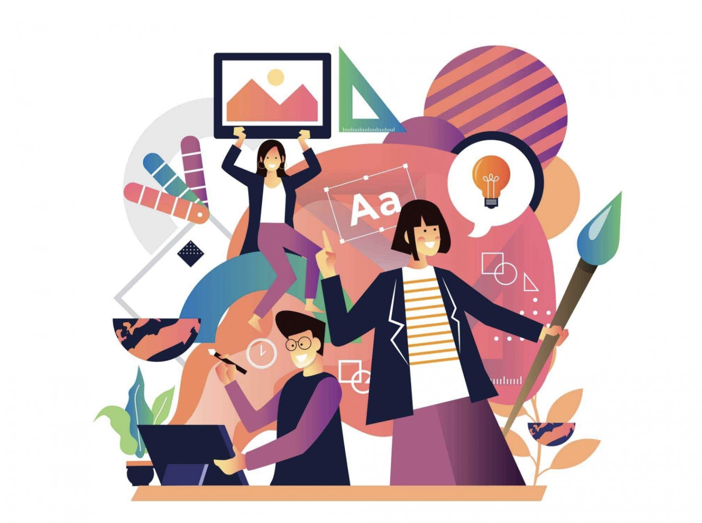
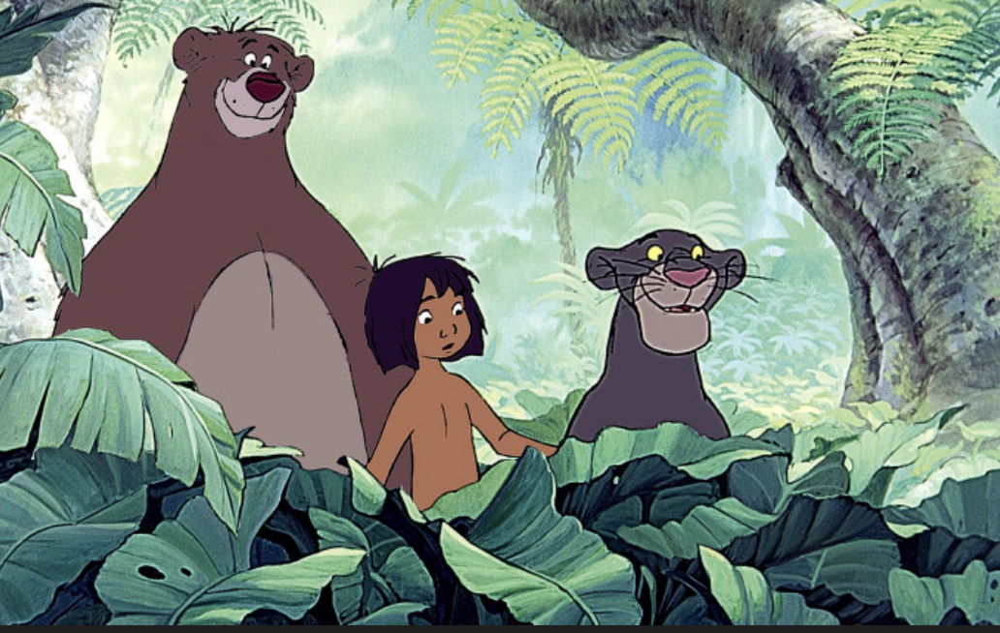
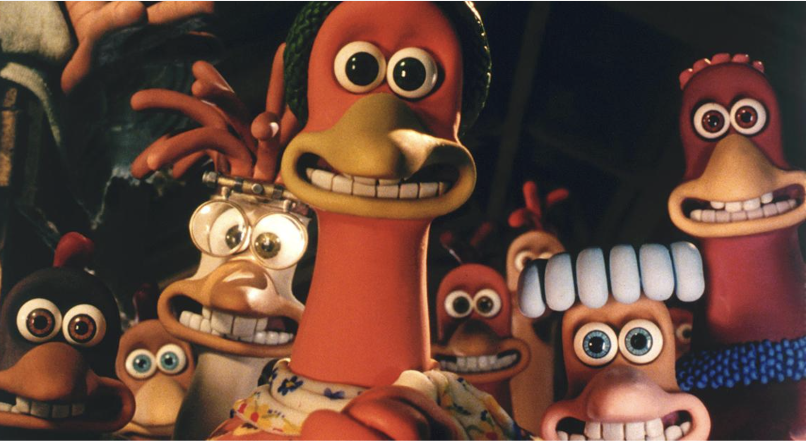
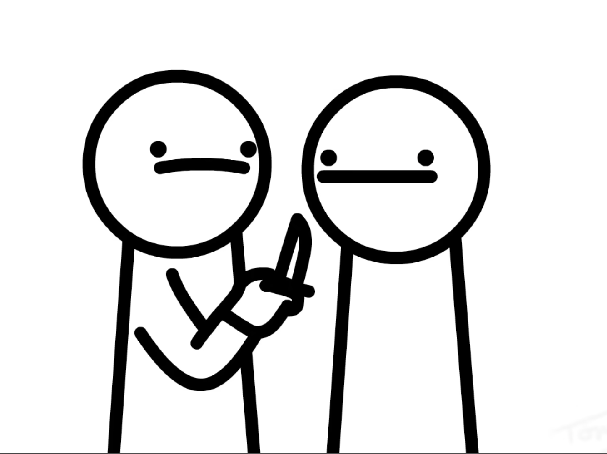
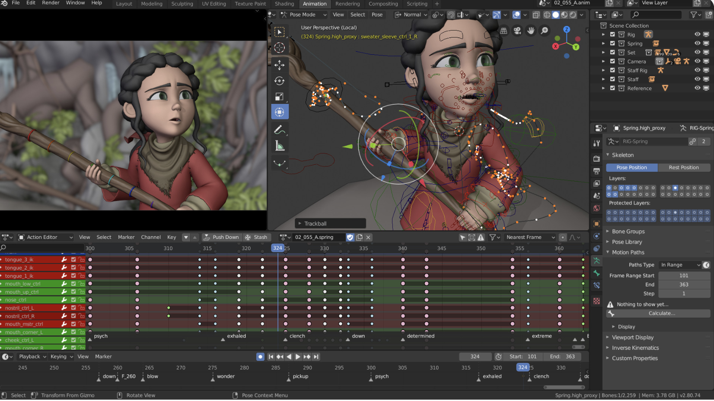

The 12 Principles of Animation
By Alejandro Pamanes

Throughout history, people have always found ways of expressing drawings and figures with life or in other words, art that moves thanks to moving frames with flipbooks and zoetropes. As animation entered cinema, filmmakers needed to think of ways to make those drawings feel more alive. Thanks to Walt Disney and animators during the golden age of cinema, a set of rules were created known as the 12 principles of animation. These principles state what an animation should have to make it work. Nowadays, as other methods have being applied, modern animation still follow the classic rules to make animation feel not realistic, but believable.
In this tab, you can see what the 5 main types of animation are

Motion Graphics
This type of animation isn't character or story driven, but it focuses on moving grapic design elements instead, such as shapes, symbols, and illustrations. It is commonly used for branding, commercials and advertising today.

Traditional animation
Also known as hand-drawn animation. It focuses on animation where everything is completely done by hand, from the frames, background, cels, everything using. traditional methods. It's been around since the start of the 20th century.

Stop-motion animation
It focuses on taking various photos of an object and playing them together to have some sort of movement. This technique is commonly applied in films involving clay figurines where each character has wired limbs underneath the clay, letting animators manipulate the character's movement for each frame they shoot.

2D animation
2D animation also requires movement using frames, but the characters and backgrounds are drawn digitally to avoid drawing every frame one by one. Chacacters can have their limbs be separated and altered and then sticked together so the animator can just move them for every new frame.

3D animation
Also known as CGI animation, it focuses on designing chacacters and scenarios by computer using 3D graphics. It shares similar concepts like rigging and moving limbs for everyframe like 2D animation, but involving 3D environments instead.
You can click the buttons below to look at all the principles of animation